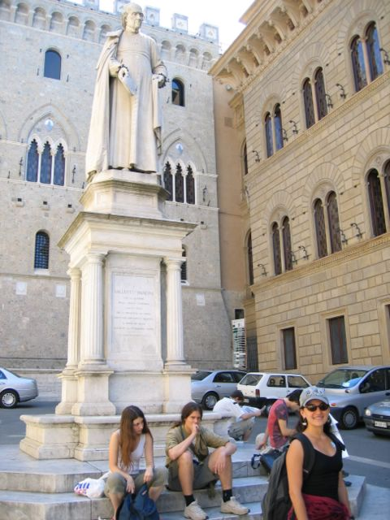

First |
Previous Picture |
Next Picture |
Last |
------------------------------ |
PICTURES HOME |
BORIS HOME

Day trip to this ancient city. The tour guide explained that people from Sienna don' t like Romans ever since the two city-states went to war and Rome won. In general most Italians will tell you that they don't feel Italian but they feel to belong to their particular region of Italy. (Only exception is soccer)
Day trip to this ancient city. The tour guide explained that people from Sienna don' t like Romans ever since the two city-states went to war and Rome won. In general most Italians will tell you that they don't feel Italian but they feel to belong to their particular region of Italy. (Only exception is soccer)
img_0310.jpgtest